Independent sample T-test: Equivalence tests
Power Analysis
0.2.0
Here we compare the results of PAMLj with published results and other software that performs equivalence tests for the t-test.
Independent sample t-test
For the independent samples t-test, we will refer to Lakens (2017) Table 1 , in which sample sizes are reported for an equivalence test with expected value \(\delta=0\) and varying “Bound”, in PAMLj refereed to as equivalence limit . Lakens (2017) Table 1 reports results for \(\alpha=.05\) and \(\alpha=.01\). The table (available here) is reproduced below.
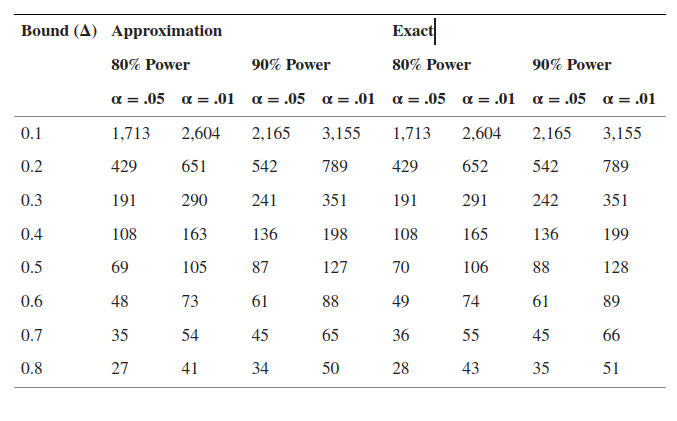
The table reports the required N (per group) to obtain a sufficient power (80% or 90%) given a certain \(\alpha\) and a certain limit \(\Delta\) of equivalence.
To compare the results with R, we are going to use results from powerandsamplesize.com website, in which the R code of their nice online calculator is public and open, so we could implemented in R to make comparisons.
PAMLj
For the firs test, we insert an Equivalence limit of \(.1\), an expected \(\Delta_d=0\), power=.80 and \(\alpha=.05\). 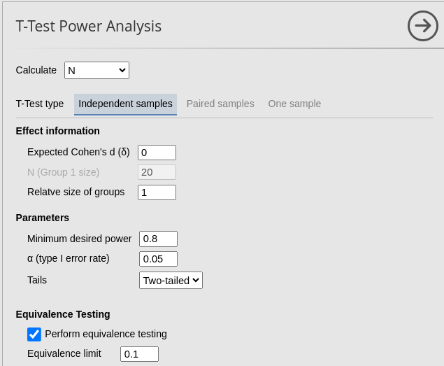 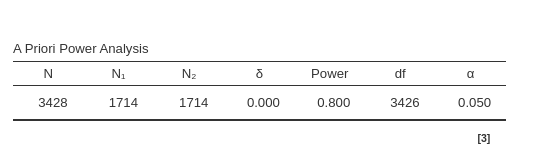
As expected, the results are quite similar. The 1-unit difference observed (1714 vs 1713) is simply due to the rounding, which may yield slightly different results across different software.
R
muA=5
muB=5
delta=1
kappa=1
sd=10
alpha=0.05
beta=0.20
nB=(1+1/kappa)*(sd*(qnorm(1-alpha)+qnorm(1-beta/2))/(abs(muA-muB)-delta))^2
z=(abs(muA-muB)-delta)/(sd*sqrt((1+1/kappa)/nB))
ceiling(nB) ## [1] 1713## [1] 0.8000048For \(\Delta_d=.2\) we proceed as before.
PAMLj
For the firs test, we insert an Equivalence limit of \(.1\), an expected \(\Delta_d=0\), power=.80 and \(\alpha=.05\). 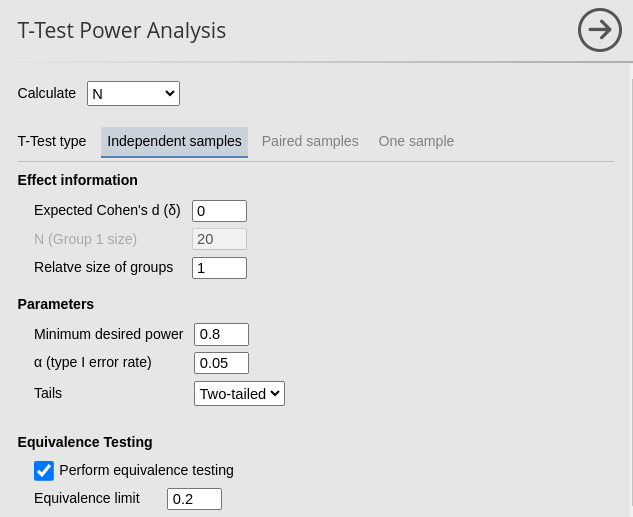 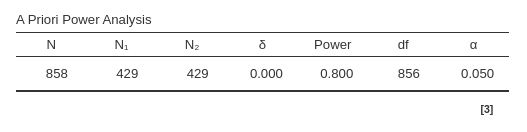
R
muA=5
muB=5
delta=2
kappa=1
sd=10
alpha=0.05
beta=0.20
nB=(1+1/kappa)*(sd*(qnorm(1-alpha)+qnorm(1-beta/2))/(abs(muA-muB)-delta))^2
z=(abs(muA-muB)-delta)/(sd*sqrt((1+1/kappa)/nB))
ceiling(nB) # 108## [1] 429## [1] 0.8000048Again, results are identical even after rounding.
As a final test, we try \(\Delta_d=.5\), \(\alpha=.01\), power=.90, expecting \(N=128\) (see table under “exact” columns).
PAMLj
For the firs test, we insert an Equivalence limit of \(.5\), an expected \(\delta=0\), power=.80 and \(\alpha=.05\). 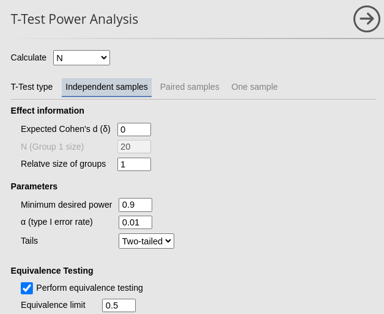 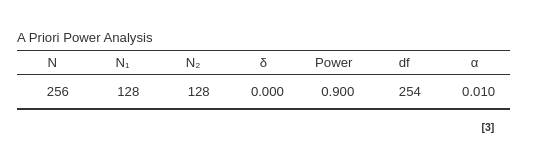
Paired t-test
To compare the results with R, we are going to use results from powerandsamplesize.com website. The code is for comparing one mean with a population value, which is equivalent to compare the difference between two means in a paired sample (repeated measures).
In the first example, we have As a final test, we try \(\Delta_d=.5\), \(\alpha=.01\), power=.90, expecting \(N=128\) (see table under “exact” columns).
R
## [1] 0## [1] 0.5## [1] 34.25539## [1] 35## [1] 0.8000048PAMLj
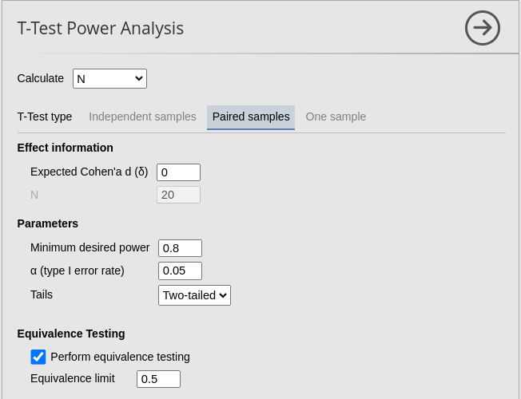 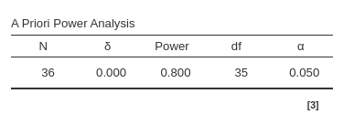
Now, we test an equivalence test assuming that the expected value is not exactly one.
R
## [1] 0.1## [1] 0.2## [1] 856.3847## [1] 857## [1] 0.8000048PAMLj
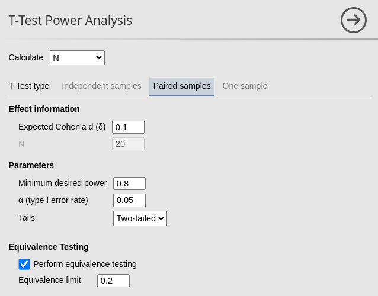 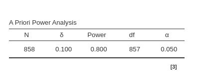
Back to
References
’
Comments?
Got comments, issues or spotted a bug? Please open an issue on PAMLj at github or send me an email